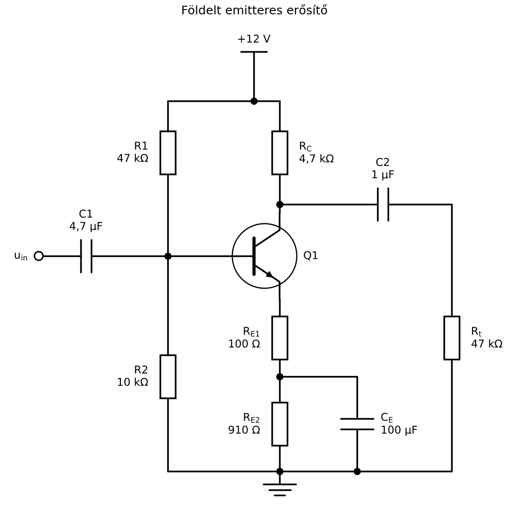
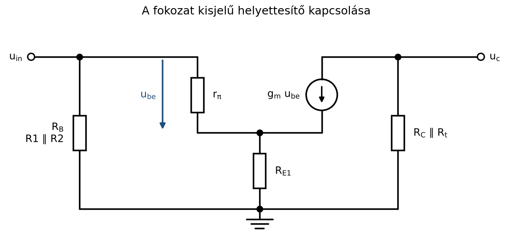
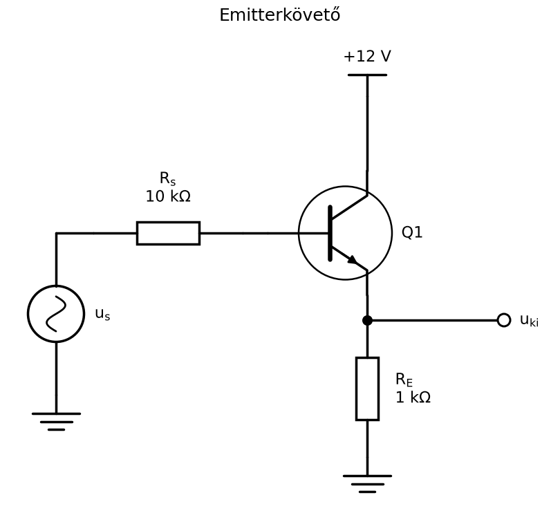
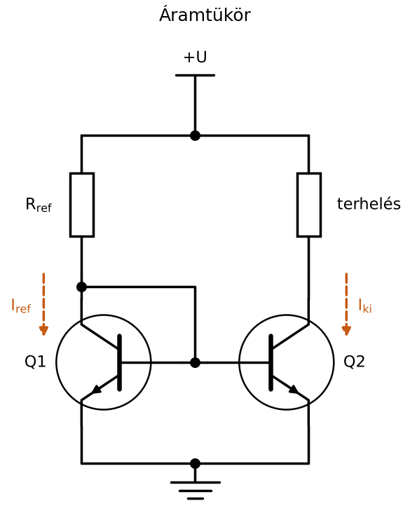
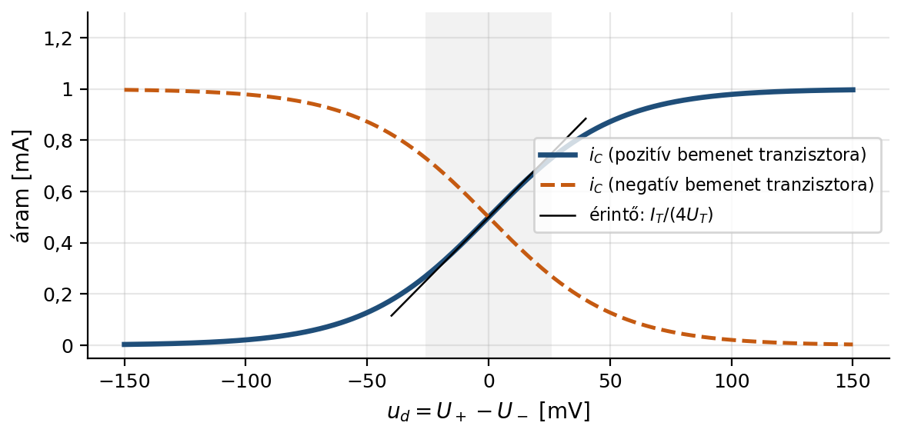
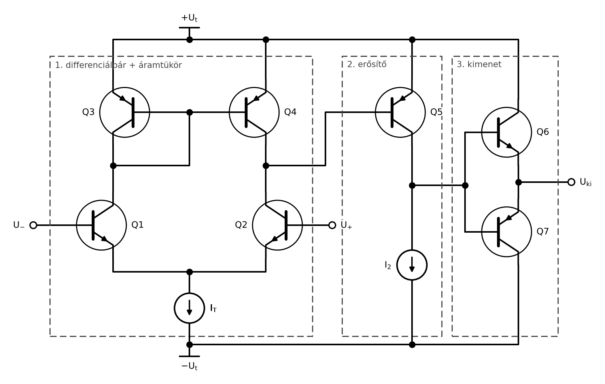

Az alfejezet végére felírod a tranzisztor kisjelű modelljét, kiszámolod egy földelt emitteres fokozat erősítését, megmondod, mire jó az emitterkövető mint puffer, és szemléletesen elmagyarázod az áramtükröt és a differenciálpárt – a műveleti erősítő belsejének két alapkövét.
A szenzormodul árammérő sönt-ellenállásán néhány tíz millivolt jelenik meg; ezt a mikrovezérlő ADC-jének sokszorosára kell növelni. Az NTC-s osztó kimenete pedig néhány kiloohmos forrásként viselkedik, és ha egy kis ellenállású terhelésre kötjük, a jel összeesik. Mindkét feladatra a műveleti erősítő a mai kész válasz (Az ideális műveleti erősítő és a negatív visszacsatolás), de hogy mit csinál belül, és miért vannak korlátai, azt egyetlen tranzisztoron lehet a legjobban megérteni.
A tranzisztor karakterisztikája görbe, az erősítő viszont egyenes arányosságot ígér. A trükk: a tranzisztort egyenáramúlag beállítjuk egy munkapontba (A BJT működése, tartományai és munkapontja), és a jel csak kicsit mozgatja körülötte. Egy kis szakaszon a görbe majdnem egyenes (linearizálás, lásd Nemlineáris elemek és a munkapont). A teljes feszültség a kettő összege, : nagybetűs index a munkapont, kisbetűs a jel. A szuperpozíció elve szerint (Szuperpozíció és forrásátalakítás) a kettőt külön számolhatjuk, amíg a linearizálás igaz. A recept tehát három lépés: (1) egyenáramú számítás jel nélkül (, ); (2) a munkapontból a kisjelű paraméterek; (3) a jel szempontjából egyszerűsített, lineáris kapcsolás megoldása. Olyan ez, mint egy kanyargó országút rövid szakaszát egyenesnek venni: jó közelítés, amíg rövid. Ha a jel nagy, az egyenes közelítés elromlik – ez a torzítás.
Az alábbi kapcsolás a bázisosztós munkapontra épül. A C1 és C2 csatolókondenzátor az egyenfeszültséget elzárja, a jelet átengedi; C_E a jel számára rövidre zárja az emitterellenállás alsó részét (emitter-hidegítés).

Gondolkodj előre: ha a bemenet pozitív irányba mozdul, merre mozdul a kollektor feszültsége? Gondold végig az és az -n eső feszültség változásán keresztül.
Válasz: a bázisfeszültség növekedése nagyobb -t, az nagyobb feszültségesést ad -n, a kollektor tehát lefelé mozdul. A fokozat fázist fordít.
Az exponenciális karakterisztika, , kis változásra: . A változó rész .
Definíció. A tranzisztor meredeksége (transconductance) a kollektoráram-változás és az azt okozó bázis–emitter-feszültség-változás hányadosa a munkapontban:
Mértékegysége A/V = S (siemens). Csak a munkaponti áramtól függ, a tranzisztortól alig. A bázis felől a tranzisztor egy ellenállásnak látszik: mivel ,
A modell tehát: a bázis és az emitter között , a kollektor és az emitter között vezérelt áramforrás . A tápfeszültség a jel szempontjából nulla (rövidzár a földre, mert nem változik), a csatolókondenzátorok a vizsgált frekvencián rövidzárak.

Teljes hidegítésnél () , a kollektoráram-változás a kollektor-körben folyik:
A mínusz a fázisfordítás. Az összefüggés a sávközépen (ahol a kondenzátorok rövidzárnak tekinthetők, a tranzisztor belső kapacitásai pedig még nem számítanak), kis jelre () érvényes, és feltételezi, hogy a tranzisztor nem lép telítésbe vagy lezárásba. Dimenzió: S·Ω = 1, azaz tiszta szám. A valós tranzisztor kimeneti ellenállása (Early-hatás) -vel párhuzamosan hat, és kissé csökkenti az erősítést; itt elhanyagoljuk. Érdekes: , az erősítés tehát nagyjából a kollektor-ellenálláson eső egyenfeszültség és 26 mV hányadosa.
Ha nincs hidegítve, a bemeneti jel egy része rajta esik: . Ebből
A közelítés akkor jó, ha . Az erősítés ekkor két ellenállás aránya, nem a bizonytalan és a hőfokfüggő dolga: ez ugyanaz a negatív visszacsatolás, mint a munkapontnál (A BJT működése, tartományai és munkapontja). Az ára a kisebb erősítés, a haszna a stabilitás, a nagyobb bemeneti ellenállás () és a kisebb torzítás. A kimeneti ellenállás kb. .
Nagy jelnél a görbület számít: a kimenet nem tiszta szinusz. Mérőszáma a teljes harmonikus torzítás (THD): a felharmonikusok effektív értéke az alapharmonikushoz képest. Teljes hidegítésnél kis jelre THD – már 10 mV-os csúcsnál kb. 10%. A visszacsatolás nagyjából -szeresen csökkenti azonos bemeneti amplitúdónál. Ha a kimenet eléri a telítést vagy a tápot, vágás (clipping) lép fel.
A csatolókondenzátor és a mögötte látott ellenállás felüláteresztő szűrőt alkot (Elsőrendű szűrők, sávszélesség és felfutási idő): . C1 az -vel, C2 az -vel, C_E pedig az emitter felől látott kis ellenállással (kb. párhuzamosan -vel) dolgozik, ezért C_E a legnagyobb.
Továbbvitt eredmény. A kisjelű modell: , ; földelt emitteres fokozat , degenerálva . A meredekség fogalma A MOSFET működése és adatlapja és Az ideális műveleti erősítő és a negatív visszacsatolás alfejezetben tér vissza.
Ha a kimenetet az emitterről vesszük, és a kollektor a tápon van, az emitterkövetőt (közös kollektorú fokozatot) kapjuk. Az emitter feszültsége a bázisét követi, kb. 0,65 V-tal alatta.

Ugyanabból a modellből, jelöléssel:
(Az előfeszítő osztó, ha van, -vel párhuzamos.) Szavakban: a feszültség szinte nem változik, de a bemenet felől a terhelés kb. -szorosnak, a kimenet felől a forrás kb. -ad résznek látszik. A puffer (buffer) azt a gondot oldja meg, hogy a forrás- és terhelésimpedancia aránya dönt: nagy forrásellenállásra kis terhelést kötve a jel nagy része elvész (Feszültségosztó, áramosztó és a terhelés hatása).
Továbbvitt eredmény. Az emitterkövető kb. egységnyi erősítésű, nagy bemeneti () és kis kimeneti () ellenállású puffer; a bemeneti és kimeneti ellenállás fogalma Az ideális műveleti erősítő és a negatív visszacsatolás, Alapkapcsolások: invertáló, neminvertáló, összegző, különbség- és műszererősítő és Mintavétel, kvantálás és ADC alfejezetben kulcsszerepű.
Az áramtükörben (current mirror) az egyik tranzisztor bázisa és kollektora össze van kötve; a rajta átfolyó beállít egy -t, amelyet a második tranzisztor is megkap. Azonos méretű, azonos hőmérsékletű (egy chipen lévő) tranzisztorpárnál a második árama közel ugyanakkora: a két bázisáram miatt , -nál 99%.

A differenciálpárban két tranzisztor emittere közös, és egy állandó áramforrásra csatlakozik. Az áram a két ág között a bázisfeszültségek különbsége, szerint oszlik meg:

Kiegyenlített állapotban mindkét ág -t visz. Ha a két bemenet együtt mozdul (közös módus), az áramelosztás nem változik – a pár a különbségre érzékeny, a közös zavarra nem. Kis -nél a görbe egyenes, a meredekség .
Egy egyszerű műveleti erősítő három fokozatból áll össze: (1) differenciálpár, áramtükörrel terhelve – a tükör a két ág áramát kivonja egymásból; (2) földelt emitteres feszültségerősítő fokozat áramforrás-terheléssel (nagy erősítés); (3) kimeneti fokozat két emitterkövetővel (kis kimeneti ellenállás, mindkét irányba). Az áramforrás-terhelés azért hasznos, mert a jel számára nagyon nagy kollektor-ellenállásnak látszik, miközben egyenáramúlag kis feszültséggel is beéri; így az erősítés sokszorosa lehet annak, amit valódi ellenállással elérhetnénk.

Kövesd a jelet: ha nő, Q2 több áramot visz, Q1 és vele a Q3–Q4 tükör kevesebbet; a Q2–Q4 csomópont feszültsége csökken, Q5 jobban nyit, a közös pont és a kimenet emelkedik: ezért a nem invertáló bemenet. A valós áramkör ennél bonyolultabb (diódás előfeszítés a kimenetnél, frekvenciakompenzáció, védelem).
Továbbvitt eredmény. A műveleti erősítő belül differenciálbemenetű, nagy erősítésű, puffer-kimenetű fokozatlánc; ebből következnek a valós paraméterek (offset, bemeneti áram, véges sávszélesség, Valós paraméterek: offset, zaj, sávszélesség, slew rate, stabilitás), amelyeket Az ideális műveleti erősítő és a negatív visszacsatolás idealizál el.
Adatok a bázisosztós munkapontból (A BJT működése, tartományai és munkapontja): , , , , , , .
Puffer: , , . ; ; ; , ezzel párhuzamosan 52 Ω. Ha a 10 kΩ-os forrásra közvetlenül 1 kΩ-os terhelést kötünk, a jelből marad; a pufferen át (a forrásellenállás és a bemenet osztását is számítva) kb. 90%.
Mit mond az összehasonlítás? Ugyanazzal a munkaponttal három különböző fokozatot kaphatunk:
| Emitter | (terhelés nélkül) | THD 10 mV-nál | |
|---|---|---|---|
| teljesen hidegítve | −251 | 2,57 kΩ | kb. 10% |
| = 100 Ω | −39,4 | 6,13 kΩ | kb. 0,24% |
| nincs hidegítés (1 kΩ) | −4,6 | 7,93 kΩ | néhány ezred % |
Nincs „legjobb” sor: az erősítést a pontosságra és a nagyobb bemeneti ellenállásra cseréljük. A műveleti erősítő azért kényelmes, mert óriási tartalék erősítése van, amelyből bőven jut visszacsatolásra.
Az elkit.ac a vezérelt áramforrással (VCCS) a teljes
kapcsolást megoldja, a kondenzátorokkal együtt:
from elkit import ac, devices as dv, units
I_C, beta, u_t = 1.39e-3, 200, 0.026
g_m = I_C / u_t
def fokozat(c_e=100e-6):
c = ac.Circuit().add_vsource("U1", "in", "0", 1.0)
c.add_capacitor("C1", "in", "b", 4.7e-6)
c.add_resistor("R1", "b", "0", 47e3).add_resistor("R2", "b", "0", 10e3)
c.add_resistor("rpi", "b", "e", beta / g_m).add_vccs("gm", "c", "e", "b", "e", g_m)
c.add_resistor("RC", "c", "0", 4.7e3)
c.add_resistor("RE1", "e", "e2", 100).add_resistor("RE2", "e2", "0", 910)
if c_e:
c.add_capacitor("CE", "e2", "0", c_e)
c.add_capacitor("C2", "c", "out", 1e-6).add_resistor("RL", "out", "0", 47e3)
return c
s = fokozat().solve(1e3)
print(f"A_u(1 kHz) = {s.v('out').real:.1f} R_be = {units.fmt(abs(1 / s.i('U1')), 'Ω')}")
st = dv.common_emitter(I_C, beta, 4.7e3, r_e=100, r_load=47e3,
r_bias=1 / (1 / 47e3 + 1 / 10e3), t_c=28.57)
print(f"képlet: = {st.gain:.1f} R_be = {units.fmt(st.r_in, 'Ω')}")
f = ac.logspace(1, 1e5, 50)
for c_e in (100e-6, 10e-6):
f_c = ac.cutoff(f, fokozat(c_e).transfer(f, "out"), "high")
print(f"C_E = {units.fmt(c_e, 'F')}: alsó határfrekvencia {units.fmt(f_c, 'Hz')}")A_u(1 kHz) = -35.8 R_be = 6.13 kΩ
képlet: = -35.8 R_be = 6.13 kΩ
C_E = 100 µF: alsó határfrekvencia 18 Hz
C_E = 10 µF: alsó határfrekvencia 151 HzA 28,57 °C a könyv 26 mV-os -jéhez tartozó hőmérséklet. A következő blokk a nagyjelű (exponenciális) modellel számolja ugyanennek a fokozatnak a torzítását terhelés nélkül:
import numpy as np
t = np.arange(1024) / 1024
for r_e1 in (0.0, 100.0):
u_e = I_C * (1010 - r_e1) # a hidegített rész egyenfeszültsége
u_c, _ = dv.ce_large_signal(10e-3 * np.sin(2 * np.pi * t), I_C, 12 - u_e, 4.7e3,
r_e1, t_c=28.57)
a = 2 * abs(np.fft.rfft(u_c)[1]) / len(t) / 10e-3
print(f"R_E1 = {r_e1:4.0f} Ω: erősítés {a:6.1f}, THD = {100 * dv.thd(u_c, 1):.2f} %")R_E1 = 0 Ω: erősítés 255.9, THD = 9.58 %
R_E1 = 100 Ω: erősítés 39.6, THD = 0.24 %A kisjelű képlet (251, illetve 39,4) és a nagyjelű szimuláció (256, illetve 39,6) kis jelnél egyezik; a torzítás azonban kb. negyvenszer kisebb a visszacsatolt fokozatban. A kisjelű modell tehát az erősítést jól megadja, a torzításról viszont semmit nem mond – ahhoz a görbe kell.
Az erősítő a munkapont körüli kis jelet dolgozza fel. Kisjelű modell: , , vezérelt áramforrás . Földelt emitteres fokozat: (fázisfordító); nem hidegített -vel , stabilabb, kisebb torzítás, nagyobb bemeneti ellenállás. Az emitterkövető erősítése kb. 1, bemeneti ellenállása , kimeneti ellenállása kicsi: puffer. Az áramtükör áramot másol, a differenciálpár a bemeneti különbséggel osztja meg az áramot; ezekből és egy kimeneti fokozatból épül a műveleti erősítő.
1. feladat. , , .
2. feladat. ; ; ; . A nagy miatt a kimeneti ellenállás nagyobb, mint a példában.
3. feladat. → , , E24: 470 Ω, (összeg 1,03 kΩ). Erősítés . ; , E6: 2,2 µF tartalékkal.
4. feladat. → , . Néhány tíz millivoltnál tovább a pár „kiakad” (az egyik ág viszi az egész áramot): nagy bemeneti különbségre a nyílt hurkú erősítő nem lineáris. Visszacsatolva ennél sokkal kisebb marad.
5. feladat.
for r_e1 in (0.0, 47.0, 100.0, 220.0):
g = dv.common_emitter(I_C, beta, 4.7e3, r_e=r_e1, t_c=28.57).gain
u_in = 1.0 / abs(g)
u_e = I_C * (1010 - r_e1)
u_c, _ = dv.ce_large_signal(u_in * np.sin(2 * np.pi * t), I_C, 12 - u_e, 4.7e3,
r_e1, t_c=28.57)
print(f"R_E1 = {r_e1:3.0f} Ω: bemenet {units.fmt(u_in, 'V')}, "
f"THD = {100 * dv.thd(u_c, 1):.2f} %")R_E1 = 0 Ω: bemenet 3.98 mV, THD = 3.82 %
R_E1 = 47 Ω: bemenet 14 mV, THD = 1.10 %
R_E1 = 100 Ω: bemenet 25.4 mV, THD = 0.61 %
R_E1 = 220 Ω: bemenet 51 mV, THD = 0.30 %Azonos kimeneti jelhez a nagyobb több bemeneti jelet kér, a torzítás mégis csökken: a visszacsatolás a görbületet „lapítja ki”.